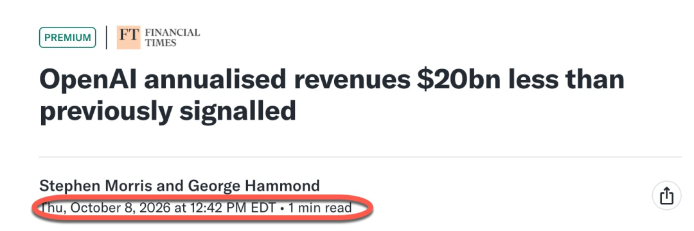
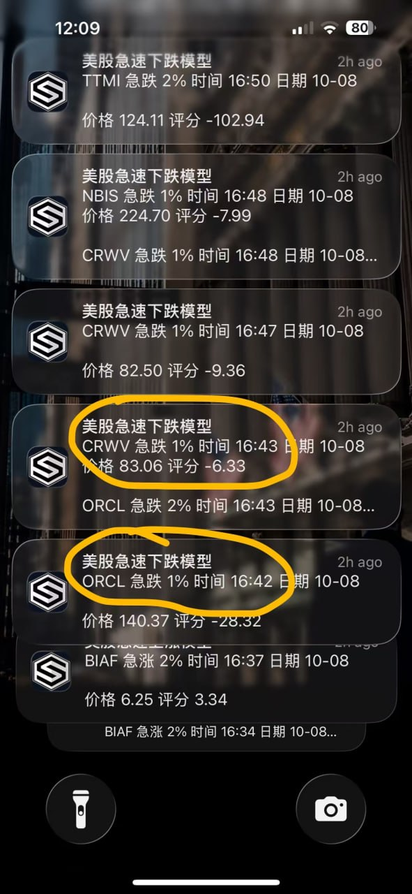
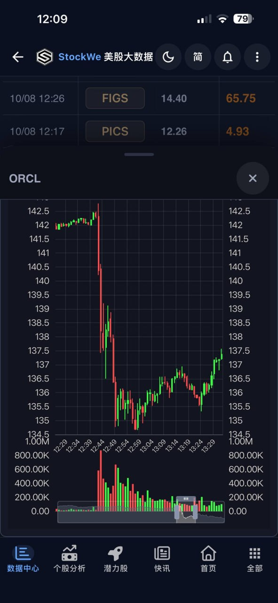
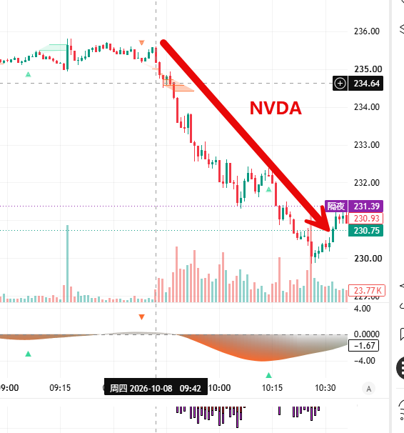
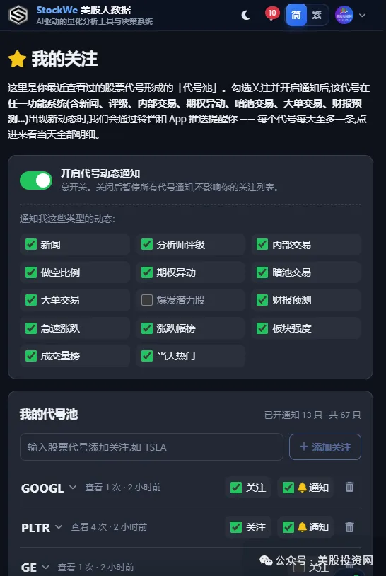
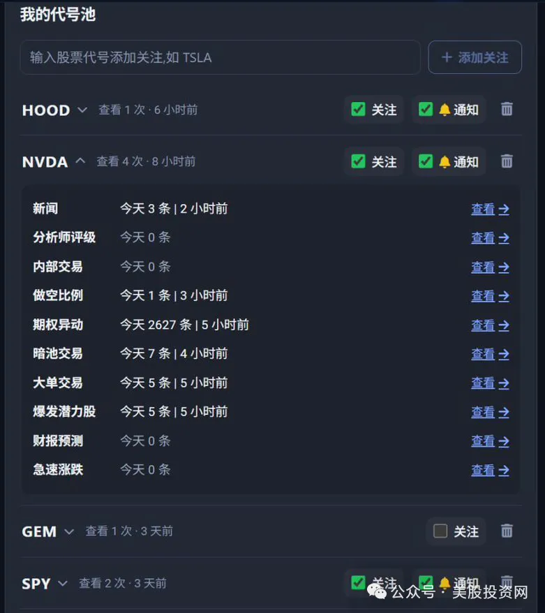
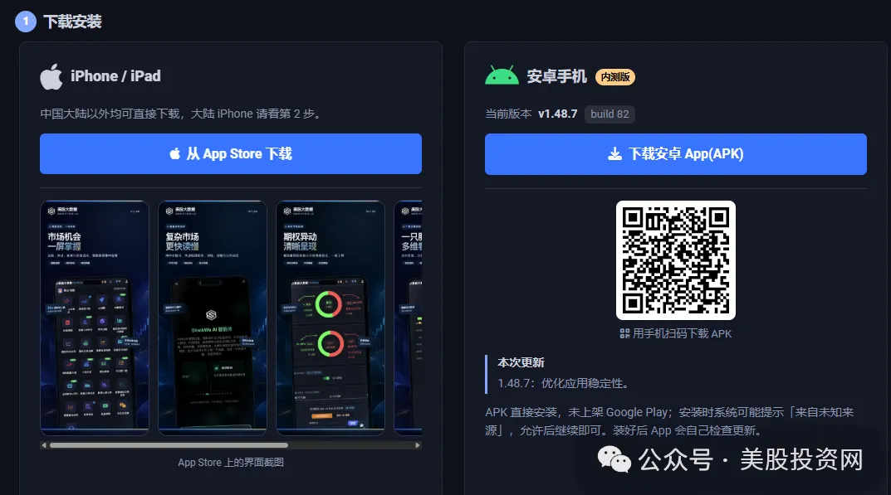
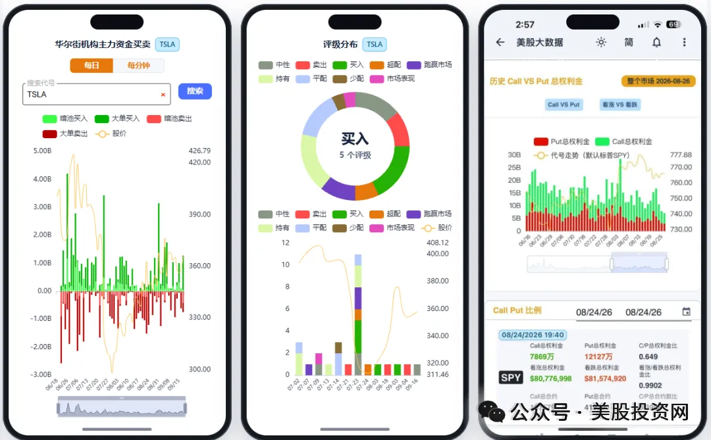

美东时间周四中午12点42分，一则关于OpenAI收入的报道，引发市场对AI产业链增长预期的重新评估。
OpenAI截至9月底的年化收入接近500亿美元，比此前广泛流传的约700亿美元低了快30%。

美股大数据APP的“美股急速下跌模型”迅速捕捉到了相关公司异动，并直接把突发提醒推送到我手机。
12:42（美西16:42），ORCL触发急跌1%的提醒，当时价格为140.37美元；
12:43（美西16:43），仅一分钟后，CRWV触发急跌1%的提醒，当时价格为83.06美元；ORCL也进一步触发急跌2%的提醒。

把这些提醒和分时图放在一起看，时间就很直观了：
ORCL在12:42前后开始快速跳水，随后从142美元上方跌到135美元附近，跌幅接近5%，仅用了 5 分钟。

这种千载难逢的机会为我们VIP会员提供了很好的做空 英伟达 NVDA 和 AMD 等AI股的机会，

StockWe美股大数据App的作用，就是替你持续监测行情。触发急跌信号后，公司代码、异动幅度和价格会直接推送到手机，让你及时查看走势、检查持仓，决定下一步怎么做。
登录StockWe.com下载APP，第一时间收到通知，让自己再也不错过！
StockWe.com/appsetup
收入口径：年化收入到底代表什么？
但收到提醒之后，我们还得弄清楚：这次下跌，究竟改变了公司的什么？
200亿美元的差距看起来很大，却不能直接理解成OpenAI丢掉了200亿美元订单。这次主要涉及收入统计范围，而市场此前根据更大的数字，对整个AI产业链建立了更高预期。
美股投资网认为，这才是我们需要继续往下看的地方：数字可以解释清楚，但支撑股价的判断，是否仍然成立？
先把“年化收入”说清楚，后面的讨论才不会走偏。
假设一家公司某个月收入达到10亿美元，乘以12，就能得到120亿美元的年化收入。它反映的是当前收入速度，不能说明公司过去一年已经确认了120亿美元收入，也不能保证未来每个月都保持这个水平。
对高速增长的公司，这个指标有用，因为年初规模较小的月份，会拉低全年收入，无法充分体现最近的业务进展。但我们看这个数字时，也要记住：它展示的是速度，全年收入还需要逐月兑现。
OpenAI这次争议，又多了一层合作伙伴渠道的统计差异。
公开报道显示，Anthropic的年化收入统计包含通过AWS、谷歌云等合作伙伴渠道产生的销售，而OpenAI披露的数据没有包含同样范围的渠道收入。此前较高的数字，涉及投资者为了方便比较而进行的口径调整。
你可以把它拆成三笔钱来看：
- 客户为AI服务支付了多少钱；
- 模型公司和云平台各自确认多少收入；
- 扣除算力、渠道和其他成本后，公司留下多少钱。
同一笔客户付款，会涉及产业链上的多家公司，但不能在不同公司的数据里重复加总，再拿来证明终端需求有多大。
所以，这次收入差距不能直接证明订单减少，更不能据此认定财务造假。我们首先要确认，两组数字统计的范围是否相同。
估值调整：口径能解释，股价为什么还跌？
因为投资者此前已经按照更大的数字，计算过未来。
买AI产业链股，背后通常有这样的判断：模型公司收入增长越快，就越有能力持续采购芯片、租用算力，供应商的收入和利润也会随之增加。
现在，收入规模需要重新理解，后面的采购能力自然也要重新评估。
做一个简单计算：公司估值不变，收入从700亿美元改为500亿美元，估值相对于收入的倍数就会提高40%。
这不代表股价应该机械地下调多少，但它提醒我们，同样的价格，现在需要公司用更强的未来增长来支撑。
AI产业链对此尤其敏感，因为采购设备、扩建产能和融资，往往先于收入兑现。供应商今天投入多少钱，依赖的是客户未来能买多少、付多少。
不过，我们也不能只看收入差距。OpenAI仍展示了第三季度整体收入运行率增长77%、企业业务运行率增长107%的数据。
所以我的判断是，这次消息首先冲击了市场预期，目前还不足以证明AI需求已经反转。
如果后续出现客户削减采购、项目延期，或者供应商下调收入和交付指引，那才是更直接的经营变化。股价先跌了，并不意味着这些变化已经发生，但我们需要开始认真跟踪。
现金流压力：甲骨文的账本更值得看
说到这里，可能有人会问：模型公司的收入，为什么让甲骨文这么敏感？
看一下它的财报，就容易理解了。
甲骨文2027财年第一季度披露：
- 尚未确认为收入的合同义务达到6640亿美元；
- 经营现金流约231亿美元；
- 资本开支约285亿美元；
- 公司披露的自由现金流约为负50亿美元。
经营现金流中，还包含约113.6亿美元具有重大融资成分的客户预付款。客户提前付款当然是好事，能减轻甲骨文垫钱买设备、建机房的压力。但收到钱之后，公司仍然要投入建设、交付服务，预付款不能直接当成已经赚到的利润。
6640亿美元的合同义务也是如此。它代表未来需要履行的业务，不能当成银行账户里的现金。最终能贡献多少利润，还要看交付时间、成本和客户履约能力。
把时间拉长一点，资金需求就更清楚了。甲骨文2026财年的经营现金流约为320亿美元，自由现金流约为负237亿美元；同期筹集了430亿美元债务资金和50亿美元股权资金。
这是一门需要先投入、再逐步收回资金的生意。设备和建设先付款，收入以后确认，投资回报还要更晚。
只要客户按约付款、项目顺利交付，这种投入可以推动增长。可一旦客户收入不及预期，或者融资变得困难，供应商也可能承受压力。
所以，市场关注OpenAI收入，也是在判断与它相关的长期采购，能不能稳定兑现。
商业化质量
我们再往前追一步：模型收入的增长，最终来自用户付费。但使用量增加，和赚钱能力增强，并不是同一件事。
模型调用价格下降，能吸引更多用户，收入能否增长，还要看使用量增加多少。
假设每次调用价格下降一半，调用量增长50%，总收入反而减少25%；调用量翻倍，也只是维持原来的收入。
即使收入增加了，公司还要支付算力、训练、研发和销售费用。如果成本下降得更快，盈利能力可能改善；如果竞争迫使公司不断降价，就可能出现用户增加、现金缺口也扩大的情况。
因此，看模型公司的商业化，我会把几项数据放在一起：
- 付费客户是否持续增加；
- 使用量增长有没有带来收入增长；
- 提供服务的成本是否下降；
- 经营亏损和现金消耗有没有改善。
Anthropic的财务数据，也需要这样分开看。公开报道中的2025年收入约为46亿美元，经营亏损约为80.6亿美元；约420亿美元的净亏损受到重大会计费用影响，不能直接理解成一年烧掉420亿美元现金。
美股投资网认为，模型公司接下来需要证明，客户付费增长能够改善经营结果。如果收入越来越大，现金缺口也越来越大，融资压力就没有解决。
回到自己持有的公司
讲到最后，我们还是要回到自己的持仓：这次消息，对你买的公司影响有多大？
芯片供应商、云平台、数据中心运营商和模型公司，赚的是不同的钱，不能因为都与AI有关，就用同一个结论判断。
对芯片和光通信供应商，我会先看客户采购、交付安排和产品竞争力。模型公司的收入争议会影响估值，但不代表供应商当天就失去了订单。
对数据中心和算力运营商，我会更重视客户集中度、融资成本和现金回收。如果扩张需要持续借钱，主要客户又依赖融资付款，就不能只根据合同金额判断价值。
拥有成熟主营业务和稳定现金流的公司，更有能力承担AI投入，但同样需要证明，新增支出能够带来收入、利润或效率改善。
接下来，我会重点跟踪四件事：
- 大额合同是否按计划转化为收入；
- 客户付款是否稳定，应收款是否正常回收；
- 资本开支增加后，自由现金流是否改善；
- 收入增长是否伴随毛利和经营结果改善。
我更愿意研究能够把订单转成收入、再把收入转成现金的公司。对于持续依赖融资、盈利改善迟迟没有兑现的公司，需要更低的买入价格，给判断出错留出余地。
OpenAI这次争议，还不能证明AI需求见顶。但它让我们看清了一个问题：收入数字可以让股价上涨，长期回报最终还是要靠公司把钱赚回来。
下一轮财报，我会更关注这些投入已经带来了多少现金回报。这个答案，比再签下一份多大的合同，更能帮助我们判断手里的股值多少钱。
输入你在关注美股代码，就可以建立自己的美股代号监控池。我们的量化AI系统会持续追踪：

新闻、分析师评级、内部交易、做空比例、期权异动、暗池交易、大单交易、财报预测、急速涨跌等重要动态。
比如你关注 NVDA，今天出了多少条新闻、有没有期权异动、暗池和大单有没有变化，点开就能直接看。

更关键的是，开启APP通知后，只要关注的股出现新动态，就可以直接推送提醒。
以前你需要自己到处找信息，现在可以把想跟踪的股票交给系统，7×24 小时帮你盯。
对长期持股的人，这是一个个股预警系统；
对做波段和期权的人，这是一个实时异动雷达。
输入代码，重要变化别再错过。
点原文链接跳转 APP下载




联系方式
客服Telegram MeiguWe
公众号 TradesMax
邮箱 buy@TradesMax.com
Email: buy@TradesMax.com
美股大数据 StockWe.com
美股投资网 TradesMax.com